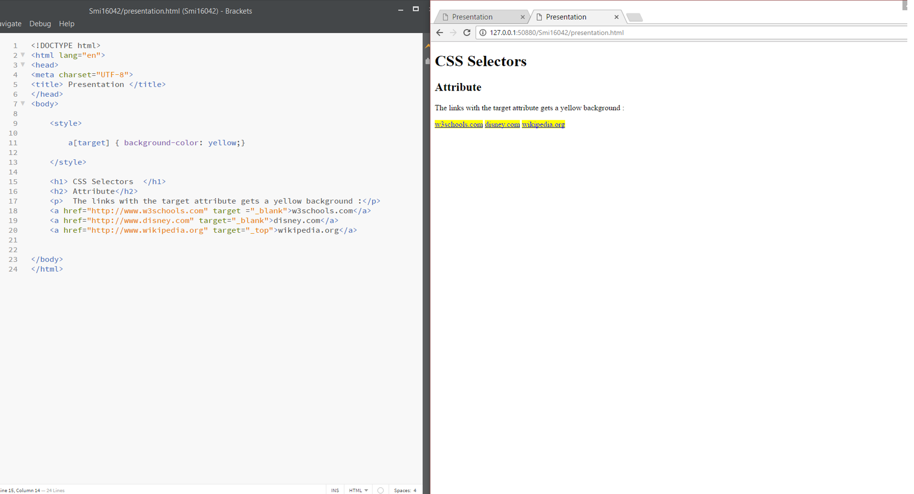
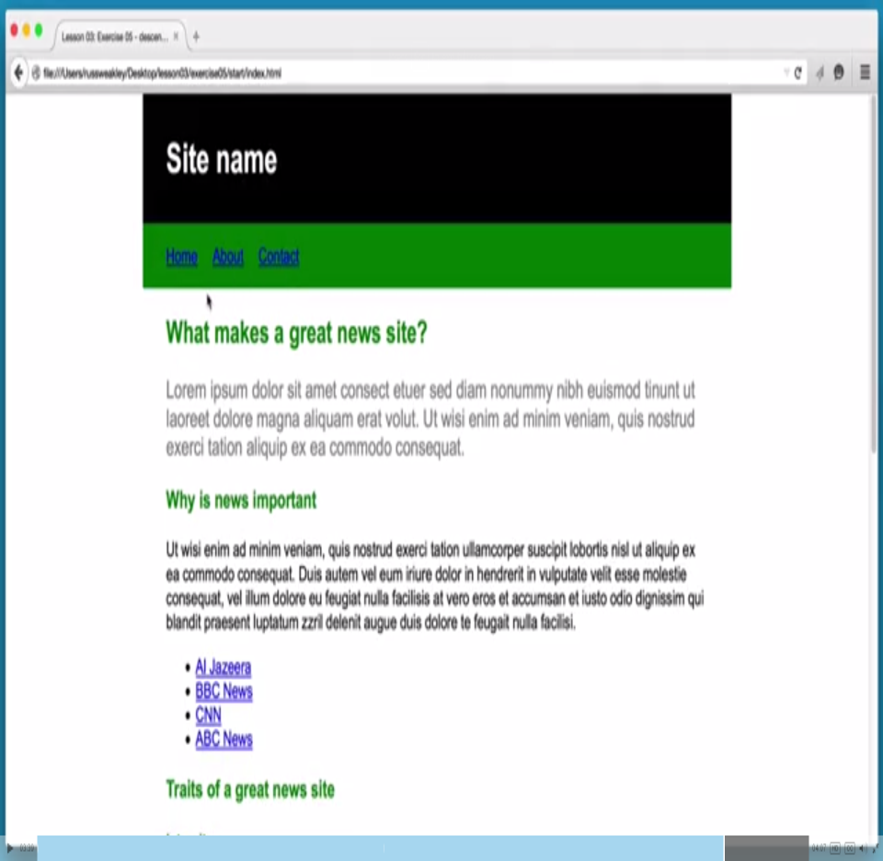
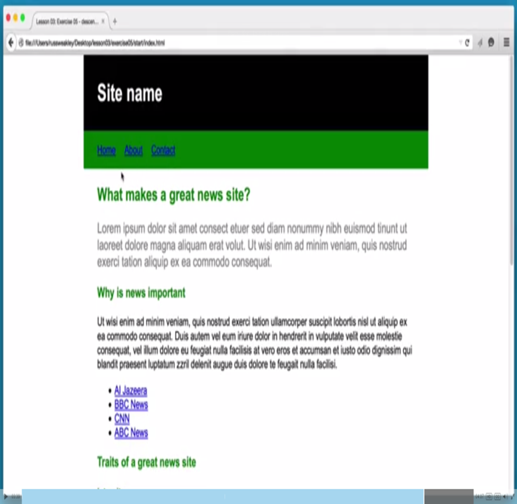
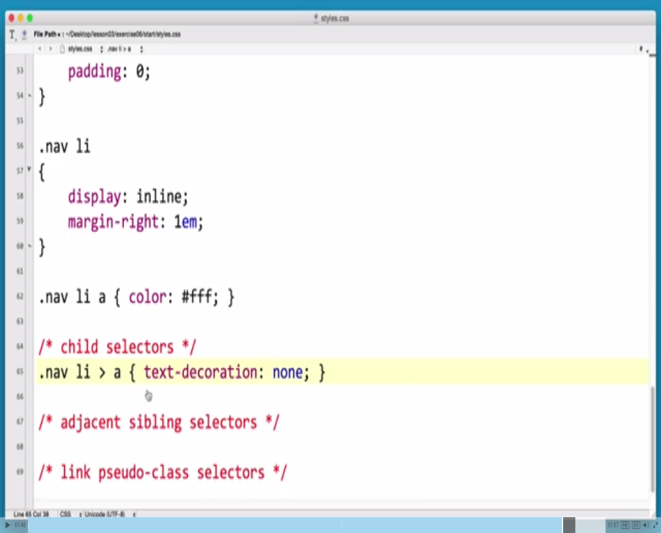
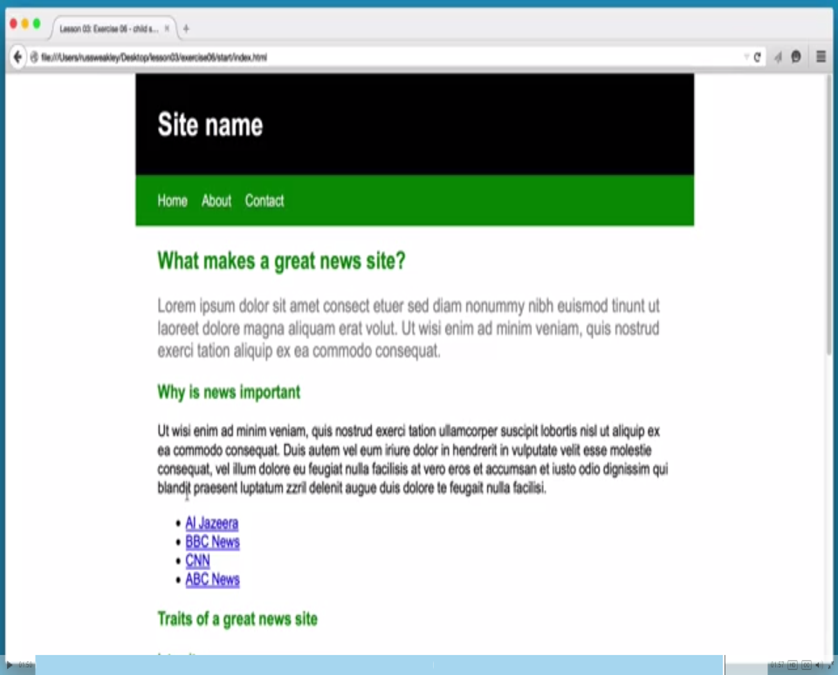

CSS Selectors, Attributes, Descendent and Child
Selectors
- A selector allows you to taget specifiic HTML elements that you want to style
- An example of a HTML element being paragraph, main, title
- The selector "selects" the element of the html page. There are 57 (+?) different selectors that can be used in CSS
- For example you could select a paragraph or a title and then use CSS to change the color, size, and other characteristics
Attribute
- The attribute selector is used to select elements with the specified attribute or value.
- The Purpose; Style all attribute elements with a target audience
- Basically this allows us to select one thing from our code and change it without having to manually change every single line of the code that it is in.
- Ex; a[target]{background-color:yellow;}

Descendent
- A descendent selector matches all elements that are descendants of a specified element, the first element represents the ancestor element (like a parent element) the second selector represents the element were trying to match
- They are written with a space between them.
- You read it right to left
- Ex; p(ancestor) a(match)
- This is useful for when you want to select certain areas without changing the entire code.
- When writing the descendent you can make it very specific, or less specific and get almost the same result, be as specific as possible
- The more efficient and robust you are the easier it is to transfer and the easier it is to move to a different document
 

Child Selector
- Child selectors are written with two selectors that are separated with a greater than symbol
- Child selectors only select items that are direct children
- White spaces are ignored
- Read right to left
- Not supported by IE6
- Ex; p>a { } OR p > a { }
- This is useful for when you want to affect only specific areas of the code without having your changes cascading further down.

